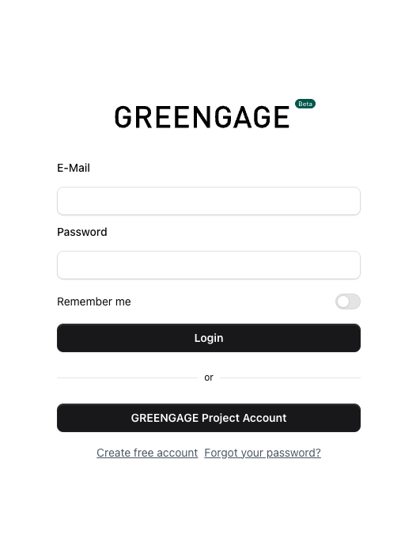
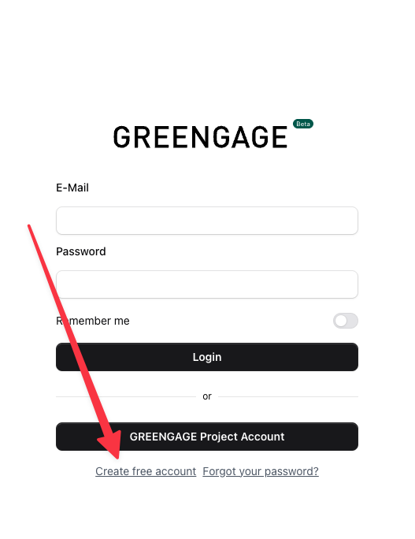
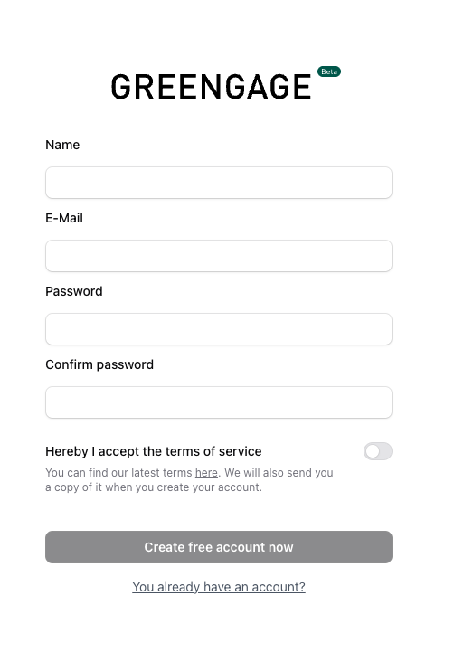

GREENGAGE Console
The GREENGAGE Console is the administration interface for quickly and easily creating and managing Citizen Observatories. All you need is a free account.
Console URL: console.greengage.dev
Get Started
Getting started with the GREENGAGE Console takes just a few minutes. Currently, we support two ways to create a free account:
- GREENGAGE Project Account - Use your existing EU project credentials
- Standalone Account - Create a dedicated account with email and password
Login

On the login screen, you can choose between:
-
GREENGAGE Project Account - If you are part of the GREENGAGE EU project, you can use your project credentials. First-time users will need to complete a consent form.
-
Custom Credentials - Use your standalone email and password.
Create a Standalone Account
If you prefer not to use the GREENGAGE project account, you can create a standalone account.
Step 1: Click "Create free account"

Step 2: Fill out the registration form

You only need three things to register:
- Name - Your display name
- Email - A valid email address
- Password - A secure password
Step 3: Verify your email
After submitting the form, you will receive a verification email. Click the link in the email to verify your account.
!!! note Email verification is not required if you use the GREENGAGE Project Account.
Console Overview
Once logged in, you have access to the full administration interface:
| Section | Description |
|---|---|
| Dashboard | Overview with statistics and recent activity |
| Observatories | Create and manage Citizen Observatories |
| Tasks & Missions | Define tasks for citizens to complete |
| POIs | Manage Points of Interest on the map |
| Surveys | Create and manage questionnaires |
| Calendar | Visual calendar view of all scheduled missions |
| Templates | Save and reuse mission configurations |
| Schedules | Set up recurring/automated missions |
| News | Publish announcements for your observatory |
| Communications | Send messages and notifications to participants |
| Webhooks | Configure external integrations |
| Users | Manage team members and permissions |
| Settings | Configure observatory settings |
Features
Dashboard & Statistics
The dashboard provides an overview of your observatory's activity:
- Total number of participants
- Completed missions and surveys
- Recent spots and submissions
- Activity trends
Mission Templates
Save time by creating reusable mission templates:
- Save as Template - Convert any existing mission into a template
- Create from Template - Quickly create new missions based on saved templates
- Templates preserve all mission settings including surveys, POI assignments, and configurations
See How to use Mission Templates for details.
Mission Scheduling
Automate mission creation with the scheduling system:
- Recurring Missions - Set up daily, weekly, or monthly missions
- Auto-Close - Automatically close missions after a specified time
- Calendar View - Visualize all scheduled and active missions
See How to set up Mission Schedules for details.
News & Announcements
Keep your participants informed:
- Create news articles for your observatory
- Articles are displayed in the mobile app
- Support for rich text formatting
See How to create News for details.
Communications
Reach out to your participants directly:
- Send Notifications - Push notifications to app users
- Contact Spot Users - Respond to specific spot submissions
- Communication Templates - Save frequently used messages
- Recipient Management - Target specific user groups
See How to send Communications for details.
Webhooks
Integrate with external systems:
- Receive real-time notifications when events occur
- Supported events: Mission completion, Spot creation, Survey submission
- Configure multiple webhook endpoints
- View webhook logs for debugging
See How to configure Webhooks for details.
Topics & Themes
Organize your content with custom themes:
- Create custom topics/themes for your observatory
- Assign colors using the visual color picker
- Filter content by theme in the mobile app
Multi-language Support
The console supports multiple languages:
- English
- German (Deutsch)
- Spanish (Español)
- Italian (Italiano)
Next Steps
After creating your account, you can:
- Create a Citizen Observatory
- Set up Tasks and POIs
- Configure Mission Templates
- Set up automated Schedules
- Invite team members to collaborate
See the How-to Guides for detailed instructions.